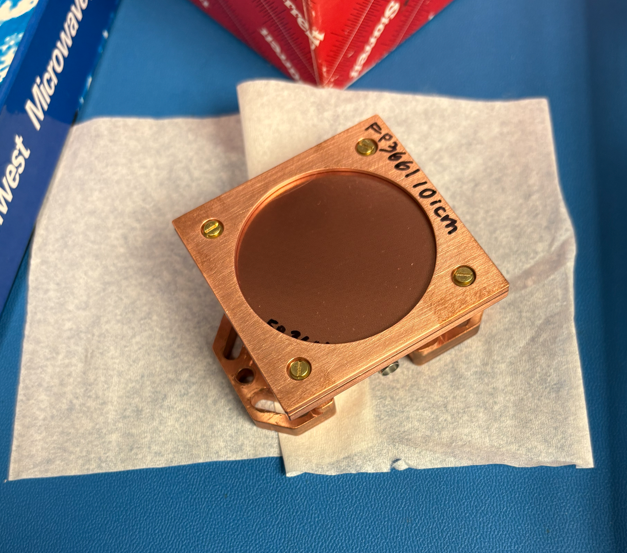
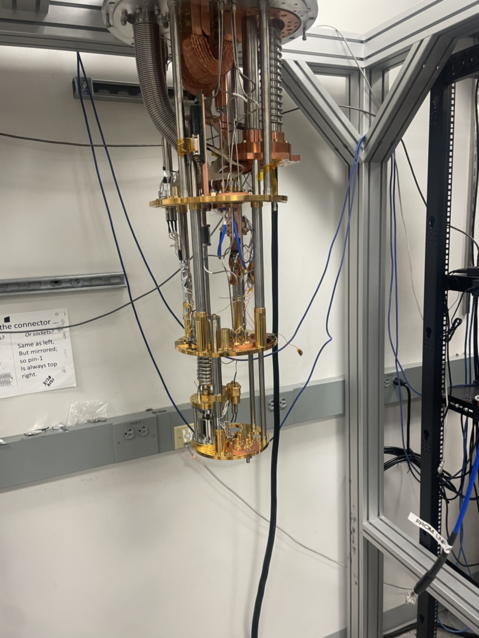
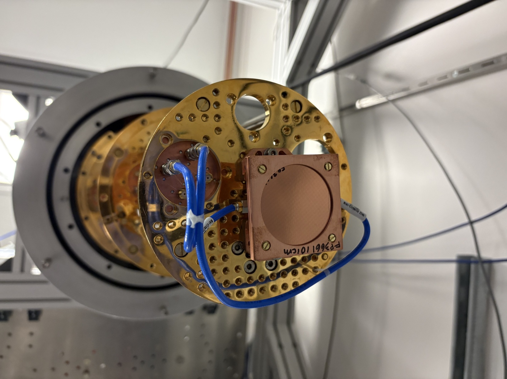
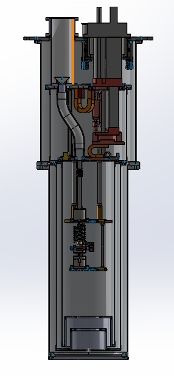
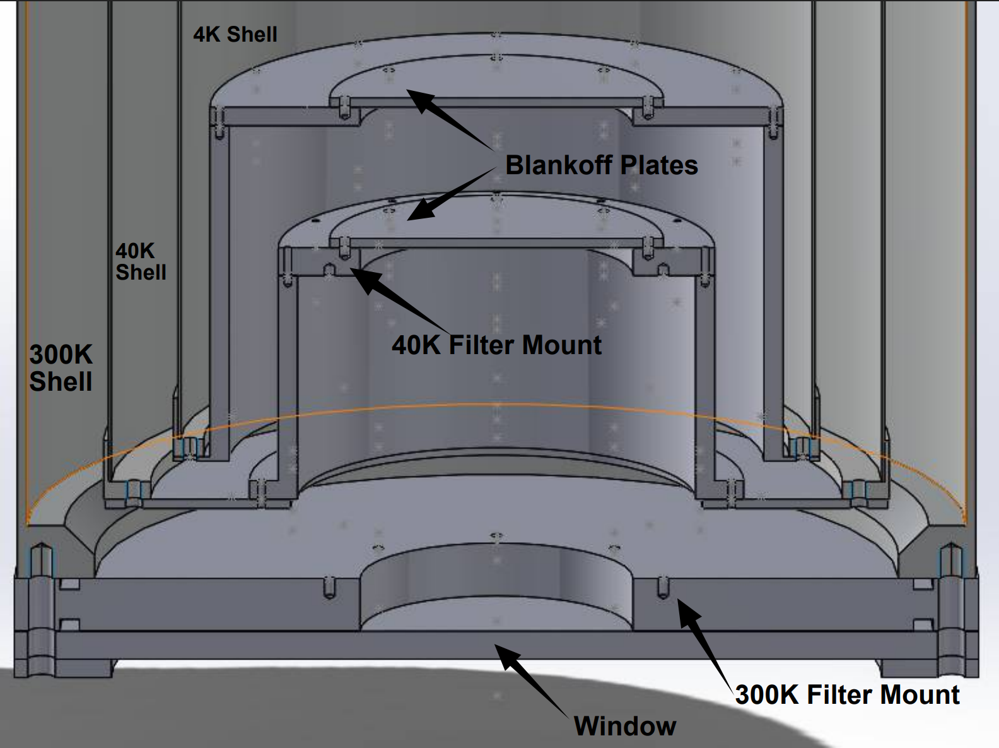
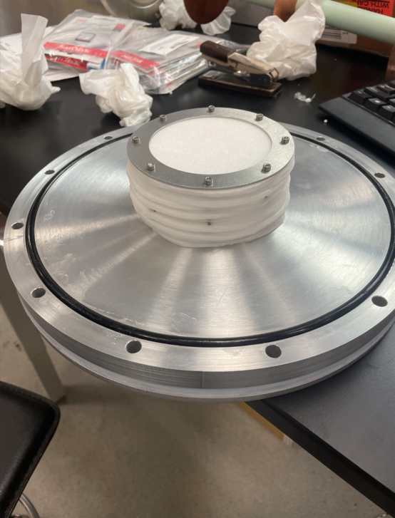
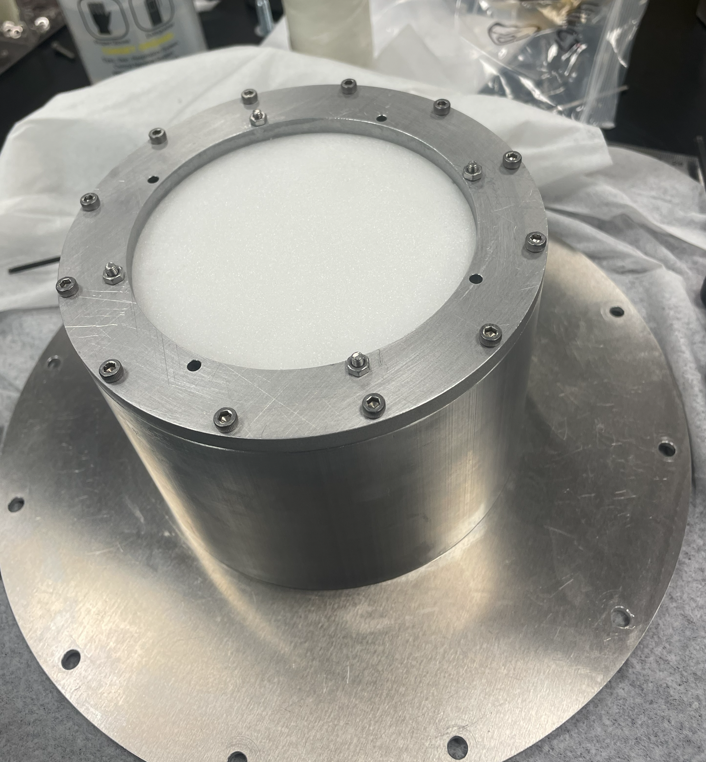
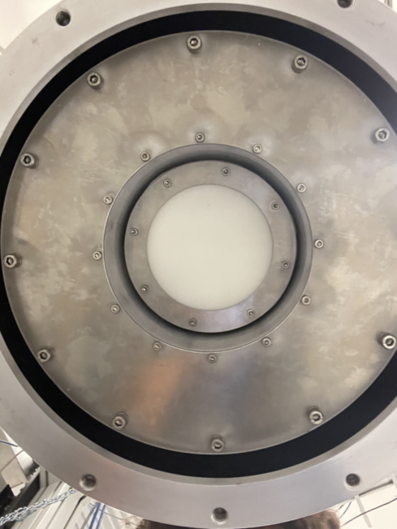
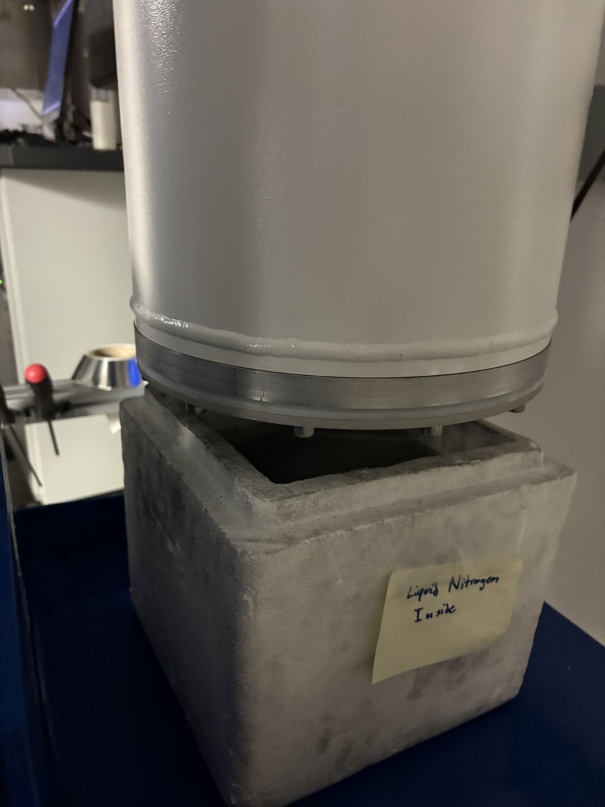

Zotefoam RT-MLI Thermal Performance
Keywords: Cryogenics | Bluefors Dilution Refrigerator | SolidWorks | Zotefoam | Thermal Analysis
View Experimental Notes (PDF)Introduction
The Fred Young Submillimeter Telescope (FYST) is a collaboration of multiple universities and institutions located on Cerro Chajnantor in the Atacama Desert in Chile. While the observatory is based in Chile, its main camera component, PrimeCam, was assembled at Cornell University. I worked for the Niemack Group at Cornell, which was one of the many groups collaborating to assemble and test PrimeCam.
PrimeCam uses state of the art Kinetic-Inductance Detectors (KIDs) which require a base thermal level of less than 100 millikelvin (100 mK is equivalent to -273.05°C). To achieve this extreme temperature, PrimeCam utilizes multiple cooling units, including two Pulse Tube Cryocoolers and a Dilution Refrigerator. A major challenge in achieving this temperature is allowing incoming light and radiation to be detected by the KIDs while simultaneously providing proper insulation so that the telescope's core remains cold. Radio-Transmitting Multi-Layer Insulation (RT-MLI) serves as a potential solution to this problem.


In this project, I was tasked with testing the thermal performance of a polyethylene foam (Zotefoam Plastazote LD30) and comparing it to that of a higher-density polyethylene foam (Zotefoam Plastazote HD30) across different stack thicknesses. The goal was to optimize both thermal insulation and radio transparency.
Apparatus and Setup
Using a Bluefors SD Dilution Refrigerator (SD DR), we simulated the conditions inside the telescope, integrating a KID to test the transmittance of the filters. Because the interior is a vacuum, pressure changes must be strictly managed, as the fragile filters can easily be destroyed if the pressure changes too rapidly. The different stack thicknesses refer to the specific temperature stages to which each RT-MLI filter stack is attached. There are four main temperature stages to focus on: the 300K outer shell (room temperature), the 40K shell, the 4K shell, and the Mixing Chamber Flange, which reaches a temperature of ~35 mK.


Filters were attached to the 300K and 40K shells to best simulate their placement in PrimeCam. To test different combinations of stack thickness, we started with 2-inch stacks on both the 300K and 40K stages, with plans to test 3-inch/1-inch and 1-inch/3-inch configurations. Using SolidWorks, I designed an adaptable plate and container that could be easily screwed into the bottom plates of the SD DR, as well as a bottom plate with an attachable window to maintain the vacuum seal. Our setup consisted of the modified SD DR featuring an optical opening, Zotefoam filters attached in the path of the opening on the 300K and 40K stages, and the KID mounted on the Mixing Chamber Flange.

We utilized four thermometers connected to the 40K stage, 4K stage, Still Flange, and Mixing Chamber Flange to monitor any temperature changes due to incoming radiation. To test the thermal performance of the filter configurations, we placed a piece of Ecosorb under the SD DR window to act as a source of uniform blackbody radiation. By swapping the Ecosorb between an open container of liquid nitrogen (~80K) and room temperature (300K), we monitored temperature shifts in the Mixing Chamber Flange. To determine the transmission of the filters, our KID was connected to the Mixing Chamber coax cable, and a Radio Frequency System-on-Chip (RFSoC) was used to send and receive signals to and from the KID.




Results and Discussion
Throughout the testing phase, we continuously monitored four main thermometers: CH1 (40K Flange), CH2 (4K Flange), CH5 (Still Flange), and CH6 (Mixing Chamber Flange).
- Hardware Optimization: Early cooldown attempts revealed the SD DR was failing to reach base temperatures because an optical gap in the 4K and 40K shells allowed 300K room-temperature radiation to directly hit the Mixing Chamber Flange. I installed custom blankoff plates and a 4K filter with a ring clamp to eliminate this radiation leak.
- Baseline Testing: Testing began with 2-inch Zotefoam stacks, comprising 13 layers (1.9 inches) at the 300K stage and 12 layers (1.8 inches) at the 40K stage. By setting the Still heater to 20% to optimize cooling power and applying a 70K Ecosorb, the Mixing Chamber reached an ultra-cold baseline of 36.2 mK.
- Material Damage & Pressurization: During a later cycle, the SD DR was pressurized using the vent instead of the precise needle valve, which severely damaged the filters at the 40K stage, permanently compressing them from 1.91 inches down to 1.51 inches.
- Thinner Configurations: Following the damage, we evaluated a 1-inch configuration featuring 7 layers of foam on both the 300K and 40K stages. With an 80K Ecosorb and a 20% Still heater, the Mixing Chamber maintained stable temperatures between 42.5 mK and 43.8 mK. We subsequently prepared a thinner 0.54-inch (4-layer) stack for the 40K stage, and eventually switched to High Density (HD30) Zotefoam to evaluate its structural improvements.
Conclusion
When I switched to the higher-density foam, there was no significant change in the thermal performance compared to the lower-density variant. A potential pitfall during data collection was the limited amount of time the 80K Ecosorb could remain under the window. Due to the liquid nitrogen evaporating quickly, I was limited in how long the Ecosorb could be applied before needing a refill. Keeping the Ecosorb in place for longer would allow us to observe a more consistent and accurate temperature, enabling a precise determination of the total temperature shift in the Mixing Chamber Flange.
In terms of transmission, both foams successfully transmitted the expected frequencies to the KID. Despite no significant change in thermal efficiency between the two variants, the experiments demonstrated the capabilities of Zotefoam Plastazote as a highly viable material for RT-MLI. The higher-density foam provided substantially more stability and rigidity compared to the softer, lower-density foam, all while providing similar thermal performance—making it much better suited to withstand the rapid pressure changes inherent to cryogenic vacuum environments.